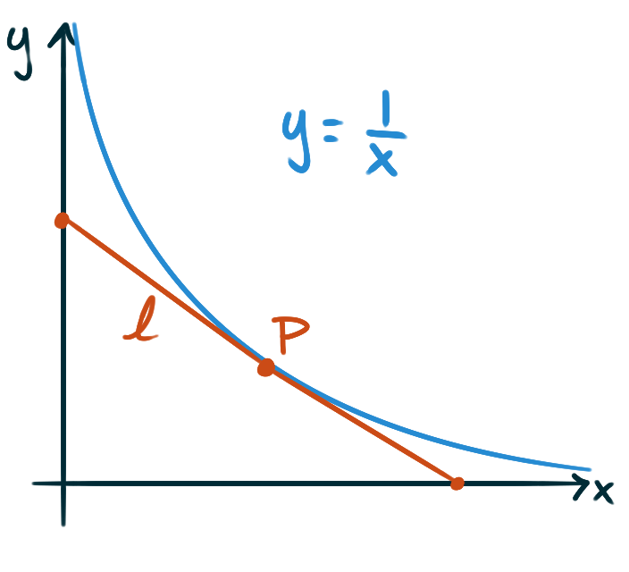

A small child on the roof of the Empire State Building
hurls a penny towards the city streets below.
The height of the penny after \(t\) seconds,
willfully ignoring air resistance,
can be fairly accurately modelled by the function
\(\displaystyle f(t) = 1250 - 42t - 5t^2\,.\)
At what speed does the penny hit the ground?
What is a formula for the derivative
of each of the following functions?
What are the values of \(\ell'(1)\) and \(\ell''(3)\),
accurate to within ±one-thousandth,
for the function \(\ell\) defined as follows?
\[\ell(\omega) = 3.11\omega^{5.809}-17\omega^{-0.1}\]
The function \(A\) with formula \( A(r) = \pi r^2\)
returns the area of a circle given its radius.
What is a formula for the derivative
\(\frac{\mathrm{d}A}{\mathrm{d}r}?\)
This formula should look familiar.
Is there a reason for this,
or is it just a coincidence?
The function \(V\) with formula \( V(r) = \frac{4}{3}\pi r^3\)
returns the volume of a sphere given its radius.
What is a formula for the derivative
\(\frac{\mathrm{d}V}{\mathrm{d}r}?\)
Based on the familiar formula for
\(\frac{\mathrm{d}A}{\mathrm{d}r}\)
that appeared in the previous question,
speculate what \(\frac{\mathrm{d}V}{\mathrm{d}r}\)
could be a formula for.
Do some quick research: is your speculation correct?
Take the derivative of the following function two different ways:
first by using the product rule straight-away,
then again by multiplying the factors before you take the derivative.
Verify that the results are equivalent.
\[f(x) = \left(x^2-7x\right)\!(4x-5)\]
Demonstrate how to calculate the derivative
of this function two ways:
once by directly using the quotient rule,
and again by rewriting the expression first
to avoid using the quotient rule entirely.
\[h(t) = \frac{\sqrt{t}-2t}{t^3}\]
Take the derivative of the following function two different ways:
first by using the quotient rule straight-away,
then again by first doing polynomial long division before you take the derivative.
Verify that the results are equivalent.
\[g(x) = \frac{2x^3-17x^2+23x-8}{2x-3}\]
What is an equation for the line tangent to the curve
\(y = \frac{1}{2}x^2-3\)
where \(x = 2?\)
The curve defined by the equation
\(y = \frac{1}{x^2+1}\)
is often called the witch of Agnesi.
What is an equation for the line tangent to this curve
at the point where \(x = 1?\)
At what point(s) does the line tangent to the curve
\(y = \sqrt{x}\) have a slope of \(18?\)
At what point(s) on the curve
\(y = x^3 - 6x^2 -63x +99\)
will the tangent line be perfectly horizontal?
What is the value of this limit?
\[\displaystyle \lim_{h \to 0}\frac{(3+h)^{17}-3^{17}}{h}\]
You know the product rule \((fg)' = f'g + fg'\),
but what about the derivative of
the product of three functions?
Considering the products “two at a time”
find a formula for the derivative \((fgh)'\)
for functions \(f,\) \(g,\) and \(h\).
You’ve been asked a few times now to
find an equation of the line tangent to a curve at a point.
Let’s formula-ize this task.
Given a general function \(f(x)\),
what’s an equation in terms of \(f\) and \(f'\)
for the tangent line to the graph
\(y = f(x)\) at the point \(\bigl(c,f(c)\bigr)?\)
Challenges
Consider the piecewise-defined function:
\[
j(x) = \begin{cases}
2x^2-1 &\text{ for } x\lt1\\
ax+b &\text{ for } x\geq 1
\end{cases}\]
Find the unique pair of values \(a\) and \(b\)
for which \(j\) is a differentiable function.
Consider the hyperbola
defined by the formula \(y = \frac{1}{x}\) for \(x \gt 0\).
Let \(P\) be a point on the hyperbola,
and let \(\ell\) be the line segment
tangent to the hyperbola at \(P\)
with endpoint on the \(x\)- and \(y\)-axis respectively.

Show that, regardless of its location on the hyperbola,
the point \(P\) will be the midpoint of \(\ell.\)
Show that the area of the triangle that \(\ell\)
cuts off in the first quadrant
is invariant per choice of \(P.\)
I.e. the area doesn’t change if you move \(P.\)
Find two points on the curve
defined by the equation \(y = x^4 - 2x^2 - x\)
that have a common tangent line.
The curves \(y = 1-x^2\) and \(y = x^3\)
intersect at a single point.
Find the angle at which they intersect.
Consider the parabola \(y = (x-1)^2+1.\)
How many lines are there that pass through the origin
and are tangent to this curve,
and what are the slopes of those lines?
What’s a formula for the \(n\)th derivative of tangent?
What about secant?
We’ve been taking the power rule,
the theorem that gives us the formula
\[\frac{\mathrm{d}}{\mathrm{d}x} x^n = nx^{n-1}\]
for all integers \(n\), as a fact.
But this fact is not manifest.
It follows from the definition of the derivative as a limit.
Use the definition of the derivative
to prove that the power rule is true.
Hint: you may need to familiarize yourself
with the binomial theorem to prove this.
Does the proof you wrote work
if \(n\) is a rational number?
What if \(n\) is an irrational number?
Similarly, the product rule
\[ \frac{\mathrm{d}}{\mathrm{d}x} (fg) = f'g+fg' \]
is not simply manifest.
Use the definition of the derivative
to prove the product rule for taking derivatives.